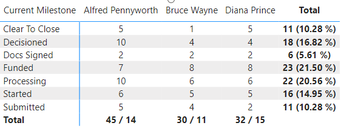

Customizing Table and Matrix Totals
What and Why
One of the great things we can do with Power BI is customize our visuals, this customization allows for us to tell a stroy with our data in ways that is easy for our report user to understand. One such customization is in our Table and Matrix visuals using a measure to create a custom value to appear in the total column(s). This gives us the ability to have total number for each row or column and then possible the total/percentage for appear for the total.
Tables
A measure we can use to customize the values that appear on the rows and for the total could look something like this:
HasOneValue =
IF(HASONEVALUE(Data[Loan Officer]),
"ROW",
"TOTAL"
)
With this measure we are checking if the value on the row have a value in the Loan Officer column in the Data table and if it does then the true side ("ROW" in this case) is returned else the false side ("TOTAL" in this case) is returned. To illustrate how these values are returned see the example table below:
A more real world example may look like the table below where we have the total units per loan officer but then we have changed the total row to not also the average.
The measure we use for this looks something like this:
Loan Officer Table - Total and Average Units =
VAR _avgUnits = AVERAGEX(SUMMARIZECOLUMNS(Data[Loan Officer], "Total Units", [Count Loans]), [Total Units])
VAR _fmtUnits = FORMAT([Count Loans], "0")
VAR _fmtAvg = FORMAT(_avgUnits, "##.0")
RETURN
IF(HASONEVALUE(Data[Loan Officer]),
_fmtUnits,
_fmtUnits & " / " & _fmtAvg
)
Note
I include my formatting as part of this measure, the reason for this is that the measure will end up resolving to a Text type format.
Matrix
Like with tables we can use a measure to customize the row/column, row total, and column total values. A measure like this allows us to modify each section of the matrix visual to a value we want to use in our data story:
IsInScope =
IF(ISINSCOPE(Data[Current Milestone]) && ISINSCOPE(Data[Loan Officer]),
"BOTH",
IF(ISINSCOPE(Data[Current Milestone]),
"ROWS",
IF(ISINSCOPE(Data[Loan Officer]),
"COLUMNS",
"OTHER"
)
)
)
I like to break down the above measure into intersections, first we check to see if we are intersecting at Current Milestone and Loan Officer and we we are return true ("BOTH" in this case). Since the Total row/column is not derived from either of those columns from our Data table then they don't return true. Next we check if we are only in scope of the Current Milestone column from the Data table, if this is true we return "ROWS" in this case. Finally we check if we are in the scope of the Loan Officer column from the Data table, when this returns true in this example we return "COLUMNS". The Totals Total (or "OTHER" in this case) is the result of all previous IF statements being false. The resulting matrix would look something like this:

Note
The order at which we stack these IF statements is important we are going from a more restrictive check to a least restrictive check. This does allow us some flexibility to target what values we want to change. If you only need to target the column totals and make the row values we can. Use the IsInScope measure above as a sort of test where values end up before moving to actual data helps out a lot.
Looking at a more real world example the below matrix shows the count of loans by currently milestone and Loan Officer. Each value where the Milestone and Loan Officer intersect we only return the total units. For the total for each Loan Officer column we return the total units along with the number of units that have Cleared To Close this month. For the total for each Current Milestone we have the total for each milestone along with the percentage of loans in that milestone. For the total of totals I make it blank as I felts that made the most since for this combination of data.

The measure used for this is:
Loan Officer/Milestone Matrix =
VAR _fmtUnits = FORMAT([Count Loans], "0")
VAR _percentMS = DIVIDE([Count Loans], CALCULATE([Count Loans], ALLSELECTED(Data[Current Milestone])))
VAR _ctcLoans = CALCULATE([Count Loans], Data[Current Milestone] IN {"Clear To Close", "Docs Signed", "Funded"})
VAR _fmtRowTotal = _fmtUnits & " (" & FORMAT(_percentMS, "##.00 %") & ")"
VAR _fmtColTotal = _fmtUnits & " / " & FORMAT(_ctcLoans, "0")
RETURN
IF(ISINSCOPE(Data[Current Milestone]) && ISINSCOPE(Data[Loan Officer]),
_fmtUnits,
IF(ISINSCOPE(Data[Current Milestone]),
_fmtRowTotal,
IF(ISINSCOPE(Data[Loan Officer]),
_fmtColTotal,
BLANK()
)
)
)
Note
Just like the table measure we do our formatting as part of this measure so that our values appear as we want them to instead of relying on Power BI picking it for us.